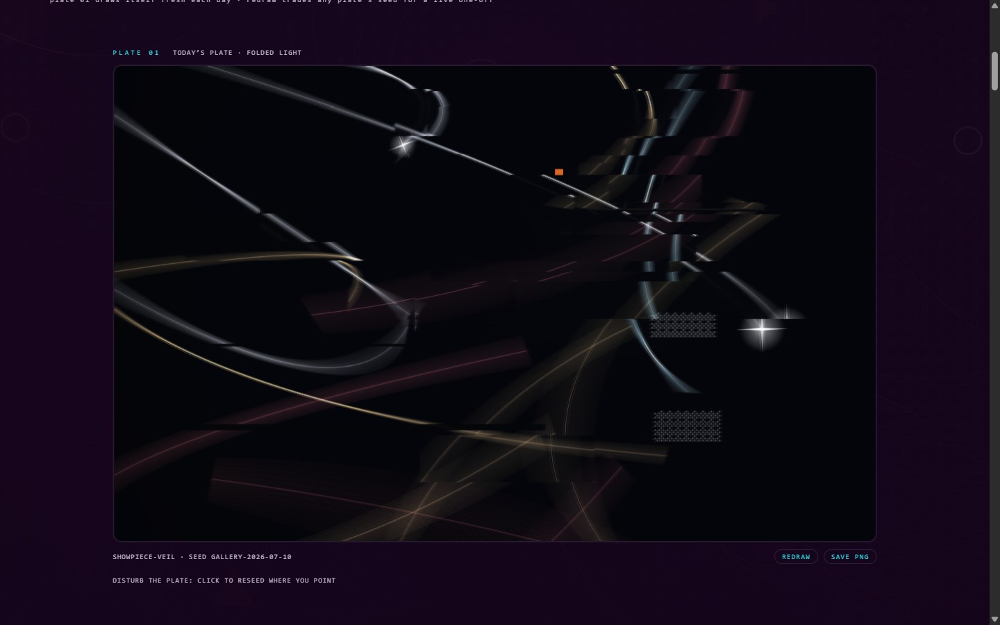

The recording.

The programme, step by step.
Your first plate is thirty seconds away.
Eight recorded steps, captured from the live site exactly as you will find it. A plate drawn the moment you arrive. Instruments you can lock and reroll. A pen replay you can watch. A collaborator that reads your poster and proves what it sees. Files a machine can hold.

Your first plate is thirty seconds away.